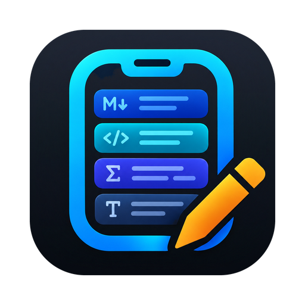
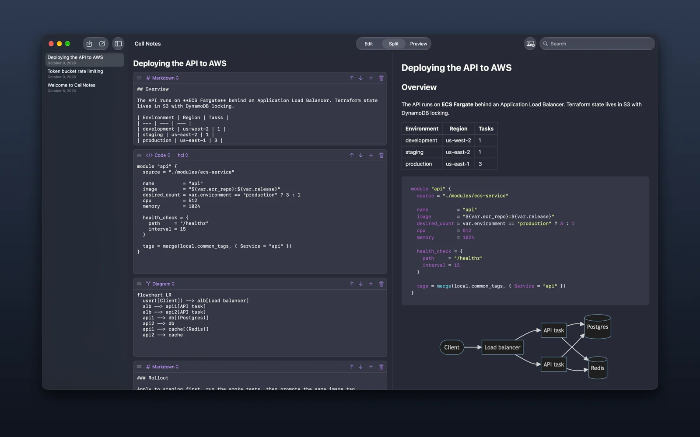
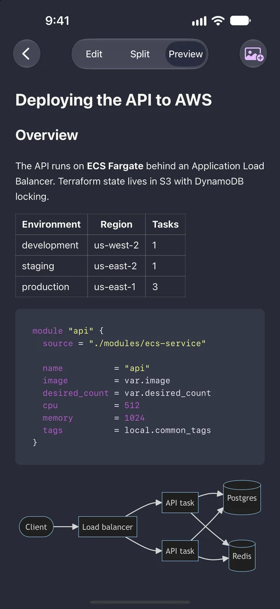
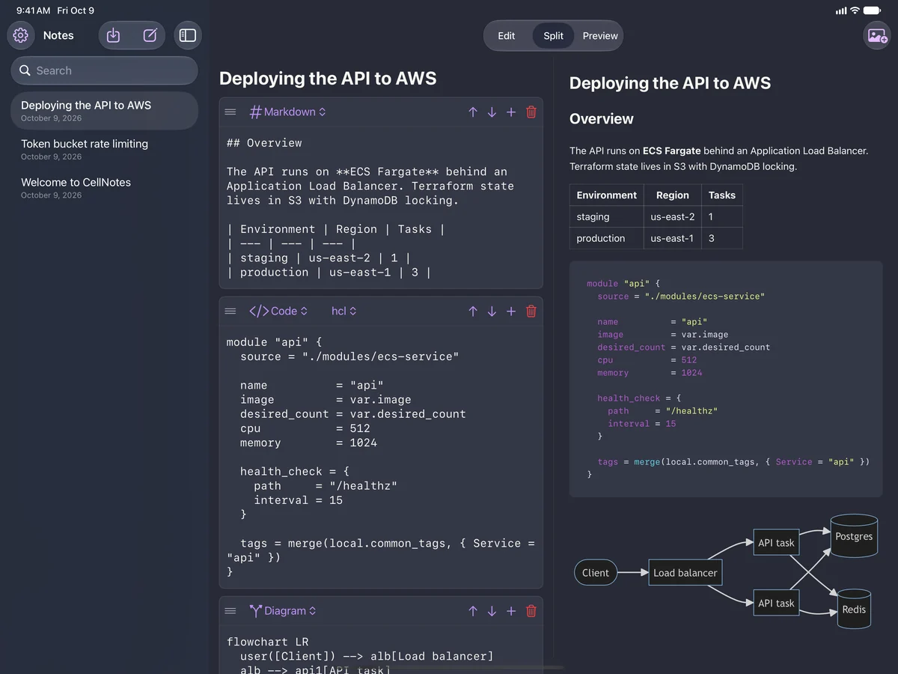

CellNotes
Notes made of cells, for Mac, iPhone and iPad.

Every note in CellNotes is a stack of cells, and each cell has its own type. Write a paragraph in Markdown, add a snippet of code, follow it with an equation and a diagram, and each part is edited and displayed the way it should be.
Cells for every kind of note
Markdown and text
Headings, lists, links and tables, rendered as you write.
Code
Syntax highlighting for over 20 languages.
LaTeX math
Equations typeset properly, right in the note.
Diagrams
Flowcharts and sequence diagrams written in Mermaid.
Images
Paste a screenshot straight from the clipboard.
Checklists
Tick items off in the editor or the preview.
On your Mac, iPhone and iPad
The same notes on every device, with an editor and preview made for each screen.


Your notes are your files
Notes are saved as plain files in a CellNotes folder in your iCloud Drive, so they sync across your devices and you can browse, back up or search them like any other files. Nothing is locked inside the app.
Private by design
No account, no tracking, no ads. CellNotes collects no data. Read the privacy policy.